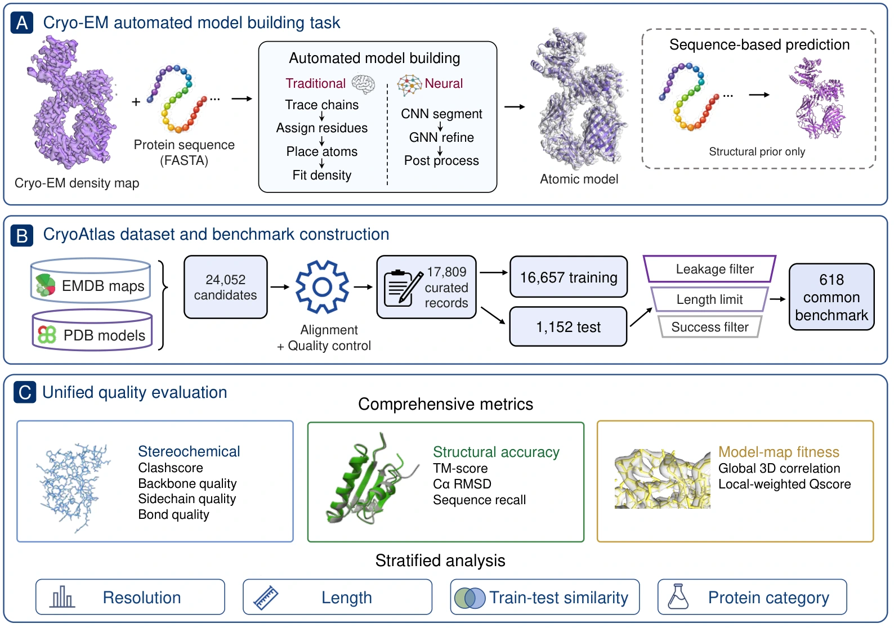
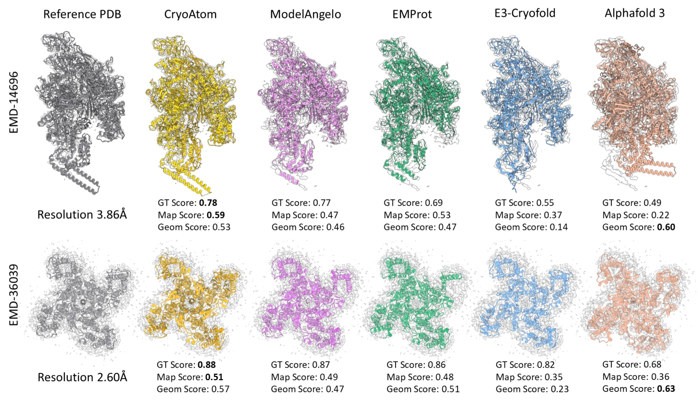

CryoAtlas: A Large Curated Dataset and Unified Benchmark for Cryo-EM Atomic Model Building
1 ShanghaiTech University 2 Cellverse Co., Ltd.
TL;DR: A large dataset of paired cryo-EM density maps and protein models, curated through map–model alignment and quality filtering, and a unified benchmark for automated atomic model building from cryo-EM density maps, jointly evaluating structural accuracy, model-to-map fit, and stereochemical validity.

CryoAtlas at a Glance
Abstract
Deep learning has accelerated automated atomic model building from cryo-EM maps, yet progress remains limited by the lack of large, high-quality datasets and standardized evaluation benchmarks. We address this gap by introducing CryoAtlas, a rigorously curated dataset and unified benchmark for density-guided atomic model building. By integrating and filtering EMDB and PDB entries (up to March 2026), CryoAtlas provides 17,809 map–model–sequence entries, including a curated 16,657-entry training split. From this resource, we construct a 618-target benchmark with a shared evaluation protocol that jointly assesses structural accuracy, model-to-map fit, and stereochemical validity. Using this framework, we benchmark state-of-the-art learning-based methods against Phenix and AlphaFold 3, comprehensively analyzing the impact of map resolution, sequence length, protein category and sequence identity on modeling accuracy. As a case study, retraining the ModelAngelo CNN component on CryoAtlas improves performance on the benchmark. CryoAtlas provides an open, reproducible foundation for future cryo-EM atomic model building research.
Unified benchmark
Visual Examples

Benchmark Results
| Method | Geom ↑ | Cα RMSD ↓ | TM-score ↑ | Seq. recall ↑ | GT ↑ | Map ↑ |
|---|---|---|---|---|---|---|
| ModelAngelo | 0.462 | 1.014 | 0.648 | 0.739 | 0.723 | 0.520 |
| CryoAtom | 0.537 | 1.198 | 0.763 | 0.899 | 0.787 | 0.568 |
| EMProt | 0.483 | 1.224 | 0.639 | 0.734 | 0.702 | 0.517 |
| E3-CryoFold | 0.165 | 3.278 | 0.739 | 0.622 | 0.539 | 0.305 |
| AlphaFold 3 | 0.598 | 3.655 | 0.813 | 0.647 | 0.552 | 0.220 |
| Phenix (24h)† | 0.462 | 3.562 | 0.075 | 0.063 | 0.194 | 0.193 |
↑ Higher is better; ↓ lower is better. Bold indicates the best value in each column. Cα RMSD is in Å. † Phenix results are averaged over the 366 targets completed within 24 hours, rather than all 618 targets. Values reflect the initial manuscript and may be updated for the final release.
Better data for model training
Retraining ModelAngelo’s CNN on CryoAtlas, while keeping the official GNN checkpoint fixed, improves downstream benchmark performance. Under matched training conditions, it also outperforms the CNN trained on Cryo2StructData.
| CNN checkpoint | Cα RMSD ↓ | GT_score ↑ | Map_score ↑ |
|---|---|---|---|
| Official | 1.014 | 0.723 | 0.520 |
| Cryo2StructData-trained | 1.108 | 0.697 | 0.505 |
| CryoAtlas-trained | 0.769 | 0.755 | 0.532 |
The official checkpoint is an external reference; CryoAtlas and Cryo2StructData are directly comparable under matched training conditions.
Citation
Provisional citation; publication details will be updated with the final manuscript.
@misc{li2026cryoatlas,
title = {CryoAtlas: A Large Curated Dataset and Unified Benchmark
for Cryo-EM Atomic Model Building},
author = {Li, Mingrui and Li, Minzhang and Qin, Weichen and Xie, Yufan
and Xiong, Zhangzhi and Shen, Sixian and Zhang, Jiakai
and Pei, Yuan and Yu, Jingyi},
year = {2026},
url = {https://openreview.net/forum?id=qHJrv65ncA}
}